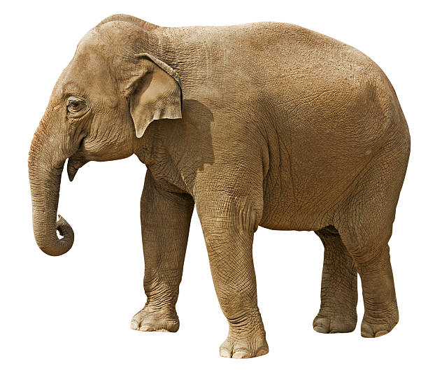
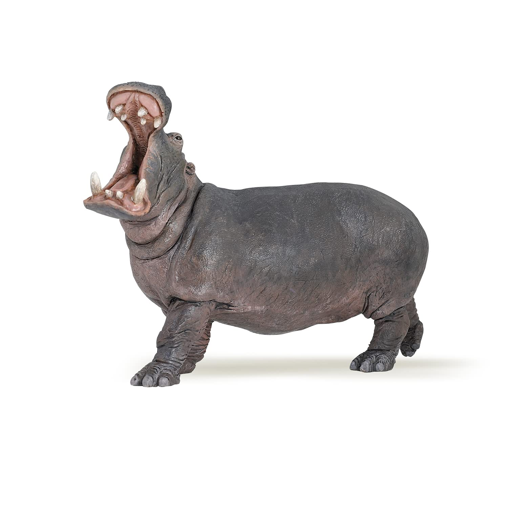

El cerdo es el mamífero paquidermo doméstico de aprovechamiento alimenticio más completo y es una de los alimentos básicos de la gastronomía española. La carne del cerdo es suave y tierna; su color es rosa pálido y su textura es firme y, sin embargo, suave al tacto. A la hora de la compra debe elegirse las piezas de apariencia ligeramente húmeda, de carne firme y color rosado grisáceo. La grasa que contenga debe ser también firme y de color blanco. Si se adquieren huesos, éstos deben ser de color azul rosáceo.
Los elefantes o elefántidos (Elephantidae) son una familia de mamíferos placentarios del orden proboscideos. Antiguamente se clasificaban, junto con otros mamíferos de piel gruesa, en el orden, ahora inválido, de los paquidermos (Pachydermata). Existen hoy en día tres especies y diversas subespecies. Entre los géneros extintos de esta familia destacan los mamuts.
Los elefantes son los animales terrestres más grandes que existen en la actualidad. El periodo de gestación es de veintidós meses, el más largo en cualquier animal terrestre. El peso al nacer usualmente es 118 kg. Normalmente viven de cincuenta a setenta años, pero registros antiguos documentan edades máximas de ochenta y dos años. El elefante más grande que se ha cazado, de los que se tiene registro, pesó alrededor de 11 000 kg (Angola, 1956), alcanzando una altura en la cruz de 3,96 m, un metro más alto que el elefante africano promedio. El elefante más pequeño, de alrededor del tamaño de una cría o un cerdo grande, es una especie prehistórica que existió en la isla de Creta, Elephas creticus, durante el Pleistoceno.
Con un peso de 5 kg, el cerebro del elefante es el más grande de los animales terrestres. Se le atribuyen una gran variedad de comportamientos asociados a la inteligencia como el duelo, altruismo, adopción, juego, uso de herramientas, compasión y autorreconocimiento. Los elefantes pueden estar a la par con otras especies inteligentes como los cetáceos y algunos primates. Las áreas más grandes en su cerebro están encargadas de la audición, el gusto y la movilidad.
Los hipopotámidos (Hippopotamidae) son una familia de mamíferos artiodáctilos que solo cuenta con dos especies actuales, el hipopótamo común (Hippopotamus amphibius) y el hipopótamo pigmeo (Choeropsis liberiensis). Se desarrollaron durante el Mioceno y son los parientes vivos más próximos de los cetáceos ya que ambos son los únicos sobrevivientes del clado Whippomorpha.

El nombre del león, que es similar en muchas lenguas romances, deriva del latín leo, relacionado con el griego antiguo λέων (léōn). La palabra hebrea lavi (לָבִיא) también podría estar relacionada, así como la egipcia antigua rw. El león fue una de las muchas especies descritas originalmente, como Felis leo, por Carlos Linneo en su obra del siglo XVIII Systema naturae. Se supone a menudo que el componente genérico de su nombre científico, Panthera, deriva del griego pan- (‘todo’) y ther (‘bestia’), pero podría tratarse de una etimología popular. Aunque llegó al castellano a través de las lenguas clásicas, panthera es probablemente de origen asiático oriental, con el significado de ‘animal amarillento’ o ‘amarillo blanquecino’.
Volver al menú